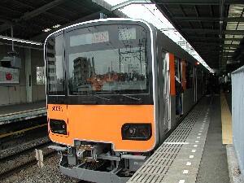

|
ペーパークラフト

１．東横線
（１）平日朝・夕の通勤特急を増発
［平日朝間］
． 平日朝ラッシュピーク時の下り（横浜方面）で新たに通勤特急３本（急行からの変更が２
本、増発が１本）を運行し、渋谷から横浜までの所要時間を短縮します。（急行利用時の３２〜
３６分から、通勤特急利用時で３０〜３２分に短縮します）
． 平日７時台（横浜発時刻）の上り（渋谷方面）特急１本を通勤特急に変更します。
． 平日朝ラッシュピーク時の上り（渋谷方面）急行１本を通勤特急に変更します。
・ 平日９時台（横浜発時刻）の上り（渋谷方面）で通勤特急１本を増発、特急１本を通勤特急
に変更します。
※平日朝（横浜発７〜９時台）の上り（渋谷方面）で通勤特急が４本から ８本に増加します。
［平日夕方］
平日１７時〜２０時３０分（横浜発時刻）の上り（渋谷方面）特急１５本を通勤特急に変更し、
渋谷方面からみなとみらい地区へ通勤するお客さまの利便性向上を図ります
（２）その他
・ 平日５〜６時台の下り（横浜方面）元住吉始発急行２本を、渋谷始発に変更します。
・ 平日７時台の上り（渋谷方面）元住吉始発急行１本を、元町・中華街始発に変更します。
・ 平日９時台（渋谷発時刻）の下り（横浜方面）渋谷発元住吉行き急行１本を、元町・中華街
行き特急に変更します。
※東横線、みなとみらい線の特急・通勤特急・急行の停車駅
特急・・・・渋谷、中目黒、自由が丘、武蔵小杉、菊名、横浜、 みなとみらい、元
町・中華街
通勤特急・・渋谷、中目黒、自由が丘、武蔵小杉、日吉、菊名、 横浜、みなとみ
らい、馬車道、日本大通り、元町・中華街
急行・・・・渋谷、中目黒、学芸大学、自由が丘、田園調布、多 摩川、武蔵小
杉、日吉、綱島、菊名、横浜、みなと みらい、馬車道、日本大通り、元町・中華街
２．田園都市線
（１）早朝・夜間の列車増発
． 平日、土休日とも下り（中央林間方面）で、長津田始発（５時０５分発）中央林間行き各駅停
車１本を増発し、長津田〜中央林間間の初電時刻を繰り上げます。(現行：長津田発５時１４
分)
． 平日、土休日とも５〜６時台（渋谷および中央林間発時刻）で急行を上下各２本増発しま
す。
． 平日１９〜２３時台（中央林間発時刻）上り（渋谷方面）で急行４本を増発します。
． 平日２０〜２４時台（渋谷発時刻）下り（中央林間方面）で急行４本、各停３本を増発し、混
雑の緩和を図ります。
（２）土休日の南町田への急行停車を定期化
土休日のみ、急行停車駅に南町田を追加します。これまでは年末年始や夏休みなどの土休
日のみ同駅への急行停車を実施していました。
（３）東武伊勢崎線内の相互直通運転区間を久喜まで延長
田園都市線〜東京メトロ半蔵門線〜東武伊勢崎線の相互直通運転区間を現行の
「東武動物公園」から「久喜」まで延長します。
※東武日光線方面の南栗橋行きは現行通りです。
○相互直通運転区
田園都市線 半蔵門線 東武伊勢崎線
⇔久喜
中央林間 ⇔渋谷⇔押上⇔東武動物公園
⇔南栗橋
東武日光線
（４）東武線直通列車の増加
東京メトロ半蔵門線内発着の列車の一部を東武線内発着に変更します。これにより、平日
の東武伊勢崎線・日光線との直通列車は現行よりも上り３６本、下り３４本増加して、上り１０６
本、下り１０４本となります。また、平日、土休日とも昼間の東武線直通列車の運転本数が１時
間に３本（平均２０分間隔）から６本（平均１０分間隔）に倍増します。
50050系も運転開始！
（５）東京メトロ半蔵門線直通列車の半蔵門線内における運転区間の延長
平日朝ラッシュ時間帯において、東京メトロ半蔵門線（渋谷〜押上間）「半蔵門」折り返しの
列車３本と「清澄白河」折り返しの列車１本の運転区間を延長し、「押上」折り返しとします。ま
た、平日・土休日の昼間においても「清澄白河」折り返しの列車（現行：１時間あたり４本）のう
ち、１時間あたり２本の運転区間を延長し、「押上」折り返しとします。
（６）土休日に大井町線直通急行を新設
土休日に田園都市線中央林間〜大井町線大井町の直通急行を新設します。田園都市線か
らりんかい線方面などへのお出掛けが便利になります。
○運転本数３往復 （上り：中央林間発９時台３本、下り：大井町発２０〜２１時台３本）
○停車駅 田園都市線内は急行、大井町線内は各駅停車となります。
○その他 大井町線用の５両編成車両を使用します。 （通常の田園都市線は１０両
編成）
３．大井町線
朝ラッシュ時の二子玉川駅において各列車がホームに到着する間隔を短くしてホーム上の
列車待ちによる混雑の緩和を図ります。
４、東武伊勢崎・日光線
|
改正前 |
改正後 |
| 種別 |
区間準急 |
準急 |
| 通勤準急 |
急行※ |
※急行料金はなし
停車駅
準急：押上、曳舟、北千住、西新井、草加、新越谷〜久喜
新越谷〜久喜
は各駅停車
急行；押上、曳舟、北千住、西新井、草加、新越谷、越谷、
せんげん台、春日部、東武動物公園〜南栗橋
〜久喜
東武動物公園〜南栗橋
〜久喜
は各駅に停車
注意；この東武線情報は東武線内の列車の種類が多いため、
本人も非常に分かりにくいので、
これが本当とは限りません。
心配な方は東武線ホームページを見といてください。
くわしくは後日。
|